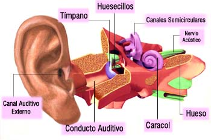
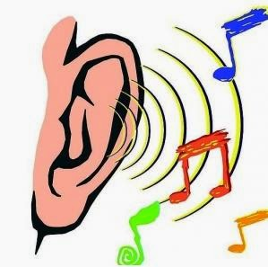

El OÍDO
Nombre:Jehoselinne Berena Alfaro Silva
Carnet: 25-3073-2019


El oído es un órgano sensorial que permite percibir los sonidos, formando el sentido de la audición y en mamíferos también se encarga del equilibrio
SENTIDO DEL OÍDO
El oído se puede dividir para su estudio en tres secciones: oído externo, oído medio y oído interno